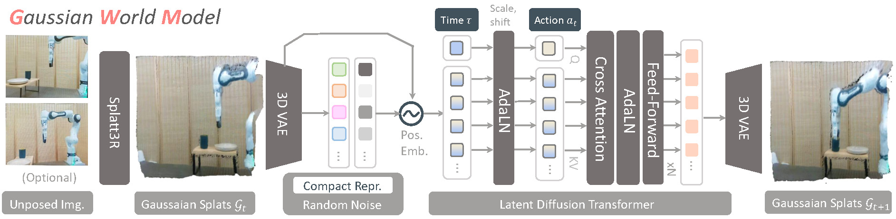

Training robot policies within a learned world model is trending due to the inefficiency of real-world interactions. The established image-based world models and policies have shown prior success, but lack robust geometric information that requires consistent spatial and physical understanding of the three-dimensional world, even pre-trained on internet-scale video sources. To this end, we propose a novel branch of world model named Gaussian World Model (GWM) for robotic manipulation, which reconstructs the future state by inferring the propagation of Gaussian primitives under the effect of robot actions. At its core is a latent Diffusion Transformer (DiT) combined with a 3D variational autoencoder, enabling fine-grained scene-level future state reconstruction with Gaussian Splatting. GWM can not only enhance the visual representation for imitation learning agent by self-supervised future prediction training, but can serve as a neural simulator that supports model-based reinforcement learning. Both simulated and real-world experiments depict that GWM can precisely predict future scenes conditioned on diverse robot actions, and can be further utilized to train policies that outperform the state-of-the-art by impressive margins, showcasing the initial data scaling potential of 3D world model.
The overall pipeline of GWM, which primarily consists of a 3D variational encoder and a latent diffusion transformer. The 3D variational encoder embeds the Gaussian Splats estimated by a foundational reconstruction model to a compact latent space, and the diffusion transformer operates on the latent patches to interactively imagine the future Gaussian Splats conditioned on the robot action and denoising time step.

We deploy a Franka Emika FR3 robotic arm and a Panda gripper for our real-robot experiments. We focus on the real-world task of picking a colored cup, and placing it onto a plate on the table. We collect a small set of $30$ demonstrations using AR teleoperation interfaces. We also setup one third-view Realsense D435i camera to provide unposed RGB-only images for observation. We compare the performance of the state-of-the-art RGB-based policy Diffusion Policy with or without our GWM representation.
The author team would like to acknowledge Ruijie Lu, Junfeng Ni, and Yu Liu from BIGAI General Vision Lab for fruitful discussions. Remember those halcyon days shared in PKU bistros in the golden afterglow.
@article{lu2025gaussianworldmodel,
title={GWM: Towards Scalable Gaussian World Models for Robotic Manipulation},
author={Lu, Guanxing and Jia, Baoxiong and Li, Puhao and Chen, Yixin and Wang, Ziwei and Tang, Yansong and Huang, Siyuan},
journal={Proceedings of International Conference on Computer Vision (ICCV)},
year={2025}
}